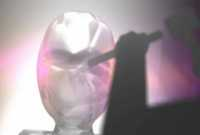
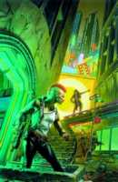

В прошлом году, в ноябрьском номере "Мира фантастики", мы посвятили статью истории киберпанка в кинематографе. Вполне логично, что пришло время обратиться к литературным истокам течения, вокруг которого вот уже третье десятилетие не утихают споры и не замолкают восторженные реплики. Об истории самой скандальной фантастической ипостаси и пойдет речь в этой статье.
Видите эти зашитые в псевдокожу наушники? Это мнемоюсты. Не бойтесь, осторожно наденьте их на голову... Дека работает в информационном режиме, потому ваши рецепторы продолжают полноценно воспринимать окружающую действительность. Теперь пошло искажение... Вместо изоплоскости монитора вы видите бумажный журнал. Анахронизм, правда? По мнению разработчиков, журнал — лучший вариант преподнесения информации о таком раритетном течении, как киберпанк. Эпистолики склонны считать, что киберпанк, созданный на бумаге и для бумаги, не может быть воспринят в форме видеоряда и четырехсекундного мыслепотока. Поэтому — перед вами журнал.
Опционально мнемоюсты могут усиливать образный ряд — в том случае, если количество предложенных иллюстраций не удовлетворит уважаемого пользователя.
Готовы к погружению в Матрицу?
Ввод.
{Данный экскурс является необязательным. Если вы придерживаетесь режима "Новичок", пропустите экскурс. Начните со второго пункта и возвратитесь к первому после прочтения всей статьи.}
// 56 535 лет назад >
Человек частично разумный, прямоходящий, вовсю осваивает естественные технологии. Топор, палка-копалка, копье. Литературой тут и не пахнет.
// 2048 лет назад >
Человек вполне разумный, иногда прямоходящий, вовсю осваивает философию. Эпикурейство, стоицизм, цинизм. Литература служит программной оболочкой для распространения философии в массы.
// 512 лет назад >
Человек разумный, по будням прямоходящий, строит систему естественных наук на основе философии. Богословие, риторика, логика. Литература несет науку в массы.
// 32 года назад >
...Двадцатый век оказался богат на литературные течения. Модернизм, сюрреализм, импрессионизм, символизм — и еще много других, с приоритетным расширением .ism, указывающим на обязательную принадлежность к литературе. Потом появился экзистенциал.ism и гуман.ism. А потом философия себя исчерпала — и после долгих лет власти над литературой сдала позиции.
Наступила эпоха постмодернизма. Эпоха, характеризующаяся прагматическим, гурманским подходом к литературе. Впервые со времен "Поэтики" Аристотеля авторы задумались не о философии и идее, а о форме и качестве произведений.
// 16 лет назад >
Человек очень разумный и на работе прямоходящий изобретает киберпанк.
Таков Уильям Гибсон в реальности.
Звучное имя стиля произошло от названия рассказа Брюса Бетке "Киберпанк" (Cyberpunk), опубликованного в 1983 году в журнале Айзека Азимова. Главные действующие лица в рассказе — подростки, второстепенные — компьютеры. Двусложное словечко (кибер — связанный с компьютерами, виртуальностью, панк — асоциальный элемент, противник любой массовой культуры) быстро распространилось в среде любителей фантастики и стало применяться к произведениям подобного рода, повествующих о "крекерах", компьютерных умельцах, всеми правдами и неправдами вставляющих палки в колеса организованной преступности под благородным названием "корпорации" — и тем самым зарабатывающих себе на хлеб.
Правда, к тому времени истинно киберпанковских произведений было не шибко много: к ним с огромной натяжкой можно было отнести роман Джона Варли "Нажмите кнопку "Enter" ("Press Enter") (у него впервые появилась группа людей, называемых "злыми хакерами"), тексты Мервина Мински (поборника теорий Тьюринга об искусственном интеллекте) и роман "Витки" ("Coils"), написанный Роджером Желязны в соавторстве с Фредом Саберхагеном. В "Витках" звездного тандема очень красочно обыграна идея киберпространства и телепатической связи с компьютерами, даже поведение героя напоминает киберпанковское, но... Подготовленный читатель, осиливший этот роман в один присест, с полной уверенностью скажет: "Чего-то здесь не хватает. Слабовато".
Применить термин "киберпанк" было практически не к чему, и сие могло означать только одно: фантастика стояла на пороге открытия нового течения. Течения, оседлать которое не удавалось именитым фантастам. Течения, по которому решила плыть группа молодых авторов.

Так появилось "Движение" ("The Movement"), неформальное сообщество авторов, положивших силы на развитие киберпанка — и низвержение заштампованности фантастической литературы. Как любое революционное движение, "The Movement" вело подпольную деятельность, всячески напоминая о приближении новой эпохи. Издаваемый им фэнзин "Дешевая правда" ("Cheap Truth"), представлявший собой сшивку размноженных фотографическим способом листов, выполнял роль подпольного печатного органа, гласа "Движения". На его страницах то и дело появлялись новые тексты в стиле "киберпанк", авторы которых предпочитали публиковаться под псевдонимами (читай "никами"), презирая саму идею "культа имени" — как идею любого культа.
Гораздо позже, когда авторы решились вернуть себе имена, стало известно, что на ниве "Движения" творили такие известные ныне писатели, как Уильям Гибсон, Грег Бир, Брюс Стерлинг, Льюис Шайнер и Пэт Кэдиган.
Мало кто, кроме самих "сподвижников", предполагал, что киберпанку суждено стать главным литературно-фантастическим течением восьмидесятых годов (в семидесятых это были авторы "новой волны", а в девяностых — "молодые и дерзкие"). А ведь все начиналось с маленького рассказа — и человеческой истории в 56 тысяч лет.
Создавать новые течения — дело непростое.
В фантастике, камерном по определению методе, который всегда рассматривали в отрыве от Большой Литературы, об атрибутике дочерних стилевых течений мало кто пекся. Наверное, ведя традицию от "Утопии" Томаса Мора, фантасты создавали "позывные стилей" по мотивам одноименных романов: "космическая опера" — от романа Джека Вэнса, киберпанк, соответственно, — от Брюса Бэтке. Не было вымученных "измов", равно как не было фантастических манифестов и принципиальных философских начал, положенных в основу течений.
Единственное, чем отличались, к примеру, фэнтези и антиутопия — так это степенью научности-сказочности, оптимистичности-пессимистичности да количества отведенных на это дело томов. Проработка героев, реалий мира, сакраментальности фраз — была откровенно неудобоваримой. В этом были похожи все "подводные" фантастические течения.
Потому, создавая киберпанк, авторы "Движения" оказались на распутье...

Любительский экслибрис киберпанка.
... оставаться верными фантастике или уйти в постмодернистский мейнстрим. Продукт замены философии прагматической, чуть ли не кибернетической когнитологией — постмодернизм — открывал новые горизонты, наделяя слово остротой ланцета, образ — вольтажом электрошока, а героя — отчетливым, порой несвежим, дыханием в читательскую спину. Искушение вывести в свет литературу о киберсвободе именно на таких полозьях было велико.
Но, как всегда, нашлись добрые пророки, упоенно зачитывавшиеся в детстве книжками Берроуза и Говарда, и не пожелавшие оставить фантастику на произвол любителей "Звездных волков" и "Рыжих Сонь", корпящих над многочисленными продолжениями. Решено было строить киберпанк в границах фантастического метода — развивая плюсы с рвением селекционера и отсекая минусы с решительностью кесаря.
Выбор атрибутики, тем не менее, оказался сложным и скрупулезным. Решено было отмести идею далеких космических странствий, запечатав героев на Земле. По-новому обыгрывались идеи и без того "новой волны": пограничная среда, в которую герои Филипа Дика попадали посредством наркотиков, переросла в киберпространство — нереальную, иллюзорную, но покорно преломляющую в себе черты реального мира среду.
Сам же мир предпочли построить в недалеком будущем. В мрачном, но относительно благополучном будущем. Тут не происходило глобальных ядерных катастроф, континенты не превратились в радиоактивные пустыни; не были выедены из недр полезные ископаемые — никто не боролся за канистру бензина. Оттолкнувшись от антиутопии, киберпанк в результате оказался так от нее далек, что волей-неволей приблизился к современности. К нам.
Словом, если антиутопия описывала день послезавтрашний, то киберпанк — утро завтрашнего дня.

А день завтрашний наступил скоро.
{Говорят, в 1970 году один человек полностью предсказал пути развития технологии ОЗУ. Звали его сперва СИММстрадамусом, потом ДИММстрадамусом, потом, вроде, ДДРАМстрадамусом...}
Мало кому из фантастов научных довелось увидеть воплощение своих даже самых трезвых идей. Сколько авторов сложили головы в покорении Марса, нетерпеливо отодвигая дату первой посадки на красную планету — начиная с 1950-го года! Не говоря уже о любителях дальних странствий и галактических баталий... Много тысячелетий пройдет, прежде чем воссозданная личность Ефремова скажет: "Да, именно об этой Андромеде я писал...".
Писатели из "Движения" удивительно точно распознали, в какую технологическую канву ляжет их мир. Компьютеры тогда только начинали развиваться, но при незаурядном воображении можно было представить эти умопомрачительные перспективы.
Что приверженцы киберпанка и сделали, практически не промахнувшись мимо главного.
Во-первых, они компьютеризировали все, что можно было компьютеризировать: начиная от аптечки, советующей хозяину принять две таблетки "Опохмелина", и заканчивая многоступенчатой охранной системой (ICE) мультинациональной корпорации, "Опохмелин" производящей.
Во-вторых, они изобрели киберпространство, в котором разворачивается немалая часть событий — и наличие которого не свойственно практически никакому другому стилю.
В-третьих, совместили человеческую плоть с шедеврами нанотехнологии...
В-четвертых, сплели из коммуникационных каналов информационную Сеть, позволившую пользователю перешагнуть за ограничения современного Интернета...
В-пятых...

Если посчитать количество затраченного на электронные клеммы "желтого металла", то на золотую клетку для новорожденного мира все равно не хватит. И не нужно. Для пленения хватало Сетей.
Вот в этом-то и проявилась суть киберпанка. Сподвижники восьмидесятых выступали не в роли футуристов-электронщиков и уж никак не в качестве чистоплотных словесных блюстителей. Они будили в читателях бунтарский дух. Не тупо-революционный, но индивидуально-протестантский. Читай, киберпанковский.
В 1945 году Вторая Мировая не закончилась, перекинувшись на другой фронт — невидимый, холодный, информационный. Недавние военные события в странах Ближнего Востока — первая в истории человечества информационная война.
Паранойя всеобщего контроля также небезосновательна: можно с уверенностью говорить, что на каждого из нас в соответствующих службах заведена отдельная папочка, обещающая пролежать нетронутой — или развернуться в самый неподходящий момент. И в повсеместно провозглашаемой свободе слова наш голос не имеет никакой силы.
Контроль. И не просто контроль, а помноженный на совершенство технологии и зависимость любой власти от пополняющихся капиталов. Невидимое ограничение во вселенной вседозволенности — как Белая Стена Саймака.
И, подобно Стальной Крысе Гаррисона, прогрызающей норы в металлических перекрытиях, в этом мире, не избрав тиранический путь монополиста и не скатившись до торговца каштанами, мог выжить один тип человека.
Кибер...
Панк.
Такой герой впервые появился на страницах произведений "отца" киберпанка, Уильяма Гибсона.

Никогда не расставайся с декой, очками — и возможностью подзаработать.
{Брюс Бетке претендовал на звание "отца" с такими же правами, как Америго Веспуччи на открытие Америки. Потому в историю вошли люди не амбициозные, но предприимчивые: Колумб да Гибсон...}
Сначала это был живой носитель — или, скорее, носильщик — информации из рассказа "Джонни-Мнемоник" ("Johnny-Mnemonic"). Герой отчаянный, но в то же время удивительно единоличный. Герой, жертвующий памятью, чтобы перенести в голове нужную заказчику информацию — за разумную сумму. И пересчитывая заработанные деньги, впору пустить Джонни слезу о потерянной памяти об отце да матери. Только не помнит киберпанк, что потерял. Потому и не плачет.
Второй судьбоносный рассказ Гибсона — "Сожжение Хром" ("Burning Chrome"). Киберпанки Джэк-Автомат и Бобби рубят ЛЕД (интерактивная система защиты) монополистической корпорации гениальной уродины Хром, пользуя при этом купленную на "черном рынке" русскую военную крэк-программу. Цель у них одна — собрать денег для любимой обоими подружки, мечтающей о дорогостоящих глазных имплантантах. Рубят безудержно, не оставляя от многомиллиардного состояния Хром ничего — потому что, оставь они хоть миллиончик, владелица отыщет ледорубов и уничтожит. Девяносто процентов киберпанки отдают в благодетельные фонды — потому что им такие деньги девать некуда, им надо всего ничего... Так, из-за глаз девушки легкого поведения, они сжигают человеческую жизнь — и тысячи связанных с ней жизней. А сами продолжают жить по-старому...
И, наконец, БИБЛИЯ КИБЕРПАНКА!
Пусть это прозвучит, как дешевая аннотация на обороте красочного издания, но — так оно и есть. "Нейромант" ("Neuromancer") Уильяма Гибсона — это шедевр.

Первый полноценный роман в стиле киберпанк. История талантливого взломщика, не брезгующего заниматься "подчисткой" людей, если заставит нужда, и обкрадывать собственных работодателей просто так, из-за каприза. История увязавшегося за кибершлюхой наркомана, не понимающего, что его настоящая и бесконечная любовь — Матрица, призрачное виртуальное пространство, разноцветный коврик для медитации, ощетинившийся острыми сюрикенами. История динамичная, как поток машин по расплавленным в неоне улицам; горькая, как первый глоток слюны после двадцати часов в Матрице; реальная, как чужое рождение и смерть, пережитые посредством симстима. История, несмотря на все тавтологии текущей фразы, заслуживающая место в человеческой истории...
Истории в 56 тысяч лет.
Роман "Нейромант" вместе с двумя другими — "Мона Лиза Овердрайв" и "Граф Ноль" — входят в первую киберпанк-трилогию Уильяма Гибсона. Всего трилогий — три.
А еще есть "теоретик киберпанка" (теойетик, товайищи!), Брюс Стерлинг, на счету которого, помимо дюжины манифестов и теоретических работ по компьютерным технологиям и непосредственно киберпанку, — романы и рассказы.
Книга Стерлинга "Схизматрица" ("Schismatrix", она же "Шизматрица") — о расколе мира на приверженцев двух путей развития. На механистов, что предпочли сожительство с достигшими совершенства механизмами, и шейперов, рискнувших экспериментировать с человеческой плотью при помощи нанотехнологий — и добившихся успеха в своих начинаниях. Главный герой Линсдей тем подходит под определение киберпанка, что с легкостью создает правила своей политической игры — и с такой же легкостью их нарушает, если за нарушением стоит победа. Руководствуясь принципом беспринципности, чуждым представлениям гуманистов об идеальном человеке, Линсдей снискал популярность и славу успешного человека во всей Солнечной системе.
Кроме означенных выше столпов течения, "романы с киберпанком" писали такие сподвижники, как Грег Бир, Руди Рюкер ("Белый свет", "Повелитель пространства и времени"), Льюис Шайнер, Майкл Суэнвик ("Вакуумные цветы", "Путь прилива"), Патрисия Кэдиган, Патрик Келли ("Солнцестояние") — авторы книг, которые без преувеличения можно назвать "кремниевой библиотекой" киберпанка.
Из произведений "киберпанков девяностых" наиболее любопытными являются книги Нила Стивенсона. На русский язык переведены романы "Лавина" и "Алмазный век", повествующие о развитии мира, в котором ютятся тысячи самых разнообразных "свободных обществ" (филов), карикатурно друг с другом соседствующих и не прекращающих вести идеологические войны. Все это разбавлено и насыщено откровенно киберпанковской атрибутикой (нанотехнологией, живыми островами, орбитальными станциями, книгами-компьютерами, способными воспитать из ребенка полноценную личность), но уже из того, что общество беспрекословно РАЗРЕШАЕТ выбирать человеку свой путь, не подкидывая колоссов в колеса, свидетельствует о том, что старый добрый киберпанк — безнадежно постарел и подобрел...
Уже не одно десятилетие литературоведы ведут малоинтересные дискуссии: существует киберпанк, как литературно-фантастическое течение, — или нет? Жанр это — или метод? Стиль — или техника? И все это время люди мыслящие перечитывают "Нейроманта" и выбираются на книжный рынок, чтобы приобрести новый роман о туманном будущем завтрашнего утра.
О будущем, когда вы проснетесь и....
{Пошел четырехсекундный образный ряд.}

... обнаружите себя в капсуле самого дешевого кондоминиума, где не задевать головой потолок при всем желании невозможно. Напялив как можно больше вещей, чтобы не расстаться с ними навсегда, вы поежитесь от утреннего холода, пару секунд помнете схваченное от напичканной дезинфекторами воды лицо. Прежде чем шагнуть в многомиллионный человеческий поток переселенного мегаполиса, льющийся по дну теряющегося в сизом тумане стеклометаллического ущелья, стены которого — небоскребы...

Вы смутно припомните, что вчера вас, накачанного гормонами и наркотиками, серьезно обчистили — оба слота на затылке неприятно пустуют, ветер пронзает холодом почти оголенный мозг. Проклятые пробки остались в капсуле, и две минуты назад автомат-уборщик позаботился отправить их вместе с бутылками и пустыми обертками от софта на свалку... Единственное, что работает безотказно — дека в легкой нейлоновой сумке да механический протез левой руки, на котором почему-то поблескивает розовая помада. Кто же это был? Наверняка одна из них...

Вас окружают лица. Ниггерские физиономии с ритуальным шрамированием, импозантные тычки японцев с дешевыми "иконами" от Сендая, самодовольные морды малинововолосых европеек, неприметные и вездесущие желтые лица китайцев, такие же "рельефные", как изоплоскость монитора. Покорные граждане: сварщики, ассенизаторы, операторы дек, овощеводы, нейрохирурги, итальянцы, послы — те, кто покорно ложатся под навязанный свыше образ жизни. Бессильные атланты, поддерживающие благополучие директоров корпораций. Вы не замечаете их, пока вам не нужны деньги — или ласки...

Вчера вы убили человека. Даже двух. Позавчера украли кое-что для кое-кого. Сегодня вы снова нарушите закон: сожжете пойнт Cirovatu Opochmelin Inc., взломаете автомат для раздачи эрзац-кофе, сбудете студентам капсулу низкокачественного эндорфина, который сами не рискнете употреблять... И, может быть, если останется время, попытаетесь узнать, чья это была помада, потому что никто раньше не рисковал даже притрагиваться к механической, черной от масла, руке. Кто знает, может это — любовь?..
Варезный софт сладок.

Парадокс: учебное пособие "Как заработать деньги в киберпространстве".
Если в восьмидесятых годах, когда киберпанк откровенно вступал в конфликты с занимавшим главенствующую позицию гуманизмом, простые читатели относились к "Нейромантам" и "Схизматрицам" с опаской, то в начале девяностых под воздействием нагрянувшего компьютерно-информационного бума киберпанк не просто полюбили, а смело возвели в ранг субкультуры. Именно тогда калечные подобия литературных героев спрыгнули со страниц, смело назвавшись шаманами каменных джунглей, объединив в себе культуру панковскую и хакерскую — и солидно потеснив реперов...
А в 1997 году сторонником новоиспеченного образования, Кристианом Кирчевым, был написан "Манифест киберпанков", в котором автор изложил принципы, которых уважающий себя киберпанк обязан придерживаться.
{Мы электронные духи, группа свободомыслящих повстанцев. Киберпанки. Мы живем в киберпространстве, мы везде, мы не знаем границ.}
Всякое явление имеет право на существование. Но такая субкультура абсурдна по определению: как, скажем, парламентская анархия. Как тут не вспомнить Стивенсона с его "филами", свободными обществами всех мастей, на деле только ограничивающими свободу? Невозможно применить строгие законы и принципы к бунтарскому мировоззрению киберпанка. Потому что и киберпанков как таковых не существует — как стартруперов, магов, инопланетян... Они — удел фантастики. Порождения среды, где они реальны, и за пределами которой существовать не могут.
В итоге киберпанк превратился в то, против чего боролись создатели "Движения". В культ. А равнодушные к виртуальным страстям владельцы салонов красоты неплохо подзаработали на массовой покраске ирокезов и пирсинговой имитации имплантантов. Плюс лэптопы хорошо раскупали. И кожаные плащи. И зеркальные очки... И книжки — иногда.

Теперь они среди нас.
Последнее время звучное слово "киберпанк" употребляется в больших дозах и не по назначению. Вышла компьютерная игра в серых тонах — киберпанк. Фильм о хакерах — киберпанк. Белье черного шелка — модель "киберпанк"...
Видя такое дело, Брюс Стерлинг с грустью изрек:
"Киберпанк мертв".

Идея данной статьи созрела до того, как ее автор увидел третью "Матрицу". Прежде он абсолютно категорично относился к любым заявлениям типа "Cyberpunk’s not dead, it just smells bad", считая их безуспешными попытками остановить вышедшую из берегов реку. Посудите, как может быть мертво течение, если оно продолжает активно совершенствоваться и видоизменяться?
Выходит, может. И дело в тех самых 56 тысячах лет...
Безвозвратно ушло то время, когда общественность можно было запугать массовым контролем, перенаселенностью, легализацией наркотиков, монополистическими корпорациями, мыслящими компьютерами, зловещим неоновым цветом и замещением хлопка блестящим нейлоном. Ушло потому, что одним прекрасным утром мы проснулись и поняли, что не так оно страшно, как могло быть. Утро завтрашнего дня подкралось, пока мы спали, нашептало на ушко, и мы ничуть не удивились, разглядев его в заклеенном обоями потолке "хрущевки", в коробочке Windows монополиста №1, в горящей с ночи вывеске интернет-клуба напротив...
Киберпанк умер как революционное течение, и последняя сцена "Революции" — лучшая панихида, которую можно себе представить. Администратор Матрицы обещает миллионам кинозрителей, что те, кто жаждут свободы, — получат ее. Потом экран заволакивает не монохромная цифровая сетка, а свет приветливого предзакатного неба...
К счастью, покойный оставил нам напоследок массу великолепных книг, написанных мастерски и со вкусом. И — живучего последователя, тот самый бессмертный русский киберпанк, которому еще предстоит развиться в бурный поток и достичь своего туманного будущего.
"Но это — другой киберпанк".
И совсем другая история.
{Теперь мнемоюсты можно снять.}
